Qué vas a encontrar
Tocá o hacé clic en un título para ir directo a esa parte.
- 1. Qué es SAVI y qué puede hacer por vos
- 2. Cómo entrar
- 3. Conocé la pantalla principal
- 4. Hacer una pregunta
- 5. Entender la respuesta
- 6. Descargar una tabla en Excel o CSV
- 7. Adjuntar imágenes
- 8. Preguntas de seguimiento, editar y regenerar
- 9. Copiar y compartir
- 10. Tus conversaciones
- 11. Cambiar de cliente o de base de datos
- 12. Mi consumo y apariencia
- 13. Si algo no sale como esperabas
- 14. Consejos para preguntar mejor
- 15. Tabla rápida de preguntas de ejemplo
- 16. Preguntas frecuentes
1. Qué es SAVI y qué puede hacer por vos
SAVI es un asistente que conversa con vos como si fuera un compañero de trabajo que conoce el ERP de tu empresa. Le escribís una pregunta en tus palabras, y SAVI busca la información, la interpreta y te la explica con números, tablas y una lectura corta.
Lo que sí puede hacer
- Consultar los datos de tu empresa en el ERP: ventas, inventario, cartera, compras, contabilidad y otros módulos a los que tengas acceso.
- Explicarte cómo hacer algo en el ERP, por ejemplo "¿Cómo se anula una factura de venta?".
- Responder desde los documentos y sitios web de tu empresa (políticas, procedimientos, precios publicados) y decirte de dónde sacó cada dato.
- Explicar términos del negocio, como "¿Qué es la UVT?".
- Leer imágenes que le adjuntes, como una captura del ERP o una factura.
Lo que no hace
- No contesta temas que no tengan que ver con el ERP, con tu empresa o con sus documentos (deportes, recetas, tareas escolares, etc.). Si le preguntás algo así, te va a decir amablemente que no puede ayudarte con eso.
- No muestra datos personales, como teléfonos, documentos de identidad o correos electrónicos.
- No modifica nada en el ERP: SAVI solo lee la información. No puede crear, cambiar ni borrar registros.
- Solo te muestra lo que tu usuario tiene permitido ver. Si no tenés acceso a un módulo, SAVI tampoco te muestra sus datos.
Pensá en SAVI como alguien muy rápido pero que no adivina. Cuanto más claro le digas qué querés (período, producto, cliente), mejor te responde.
2. Cómo entrar
- Abrí SAVI con el acceso directo del escritorio. Se abre la pantalla de inicio de sesión.
- Escribí tu usuario en el campo 1. Es el mismo que usás en el ERP.
- Escribí tu contraseña en el campo 3. Si querés ver lo que escribís, tocá el ojito 4; tocalo de nuevo para volver a ocultarla.
- Tocá Entrar 5.
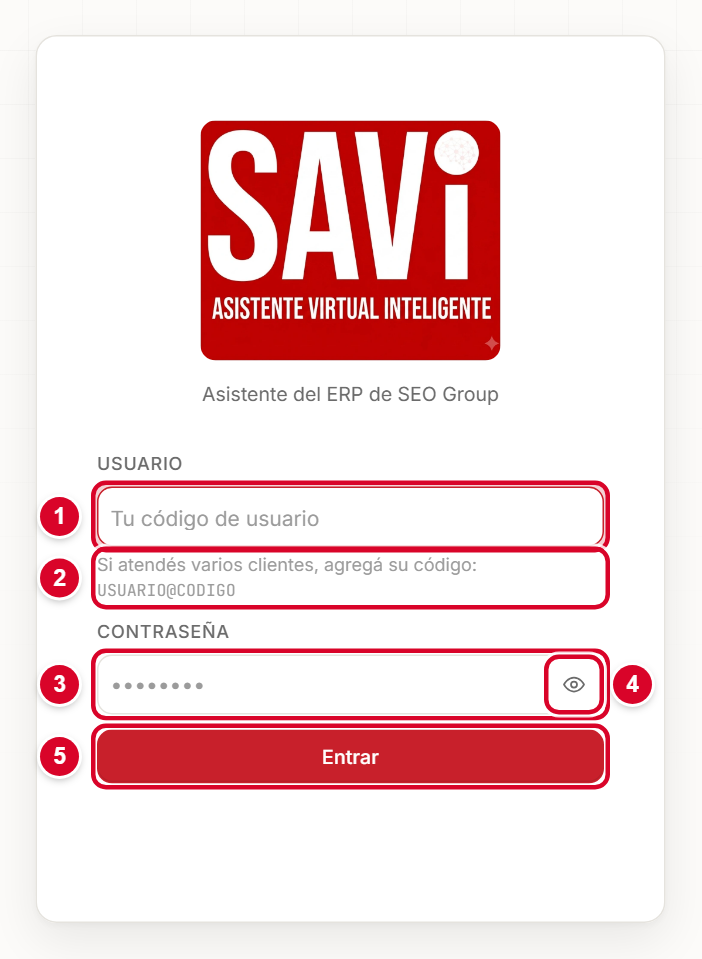
Si atendés a varios clientes
Algunas personas, como el equipo de soporte, atienden a más de una empresa. En ese caso escribí el usuario seguido de una arroba y el código del cliente, con este formato: USUARIO@CODIGO. Por ejemplo, maria@MIEMPRESA. El código te lo da tu administrador.
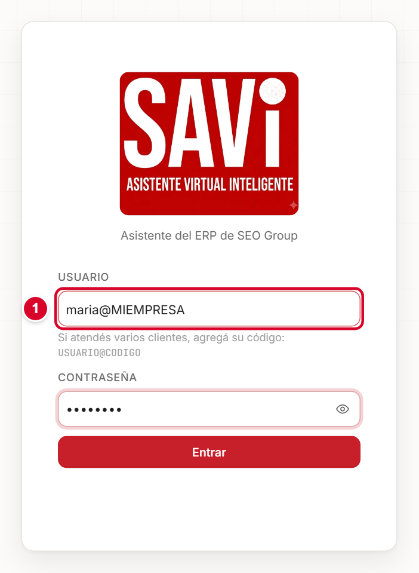
SAVI recuerda en este equipo los códigos que ya usaste, y te los sugiere cuando escribís tu usuario.
| Mensaje | Qué significa y qué hacer |
|---|---|
| Ingresá usuario y contraseña. | Dejaste un campo vacío. Completá los dos. |
| No pudimos entrar. Revisá el usuario, la contraseña y el código del cliente. | Algún dato está mal escrito. Revisá mayúsculas, espacios y el código después de la arroba. |
| No encontramos ese cliente. Revisá el código después de la @. | El código del cliente no existe. Confirmalo con tu administrador. |
| Ese cliente está desactivado en SAVI. Avisale a tu administrador. | El código existe, pero ese cliente fue desactivado. Tu administrador puede volver a activarlo. |
| No pudimos conectar con la base de ese cliente. Probá de nuevo en unos minutos o avisale a tu administrador. | El código es correcto, pero SAVI no logra comunicarse con la base de datos de ese cliente (por ejemplo, el servidor está apagado). Esperá unos minutos; si sigue, avisá a tu administrador. |
| No pudimos conectarnos con SAVI. Revisá tu conexión e intentá de nuevo. | Hay un problema de red entre tu equipo y SAVI. |
| SAVI no está respondiendo en este momento. Probá de nuevo en unos minutos. | El servicio está detenido o reiniciándose. Si sigue, avisá a soporte. |
Si tu cuenta está deshabilitada, o hubo demasiados intentos seguidos, SAVI te lo dice con el motivo y el tiempo de espera.
3. Conocé la pantalla principal
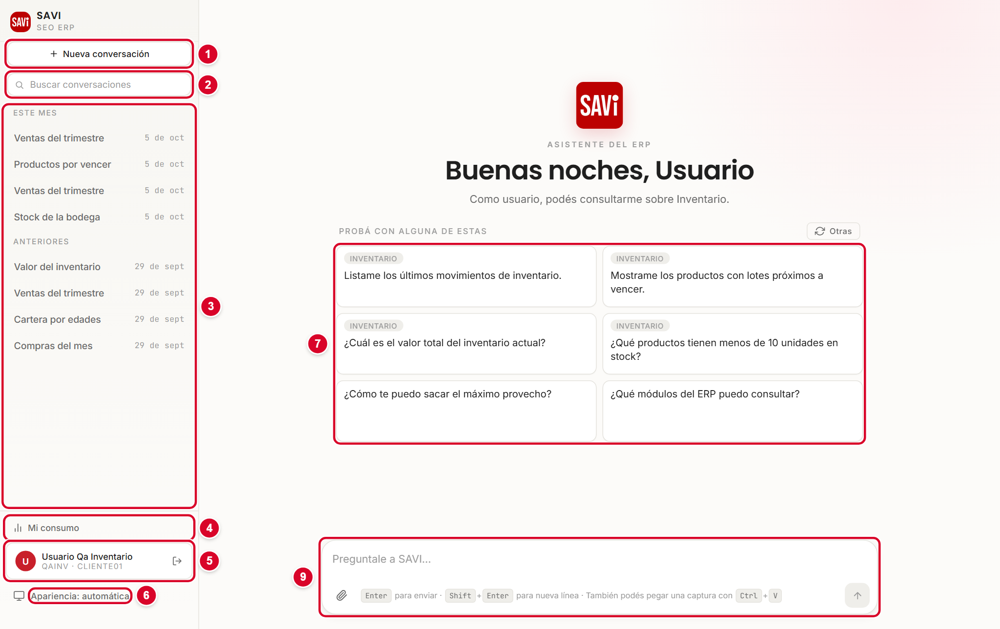
- 1Nueva conversación. Empieza un tema desde cero.
- 2Buscar conversaciones. Filtra tu historial por palabras del título.
- 3Lista de conversaciones. Están agrupadas por fecha: Hoy, Ayer, Últimos 7 días, Este mes y Anteriores. Debajo de cada título ves el cliente al que pertenece.
- 4Mi consumo. Cuántas consultas hiciste.
- 5Tu usuario. Tocá tu nombre para ver tu perfil; el botón de la derecha cierra la sesión.
- 6Apariencia. Cambia entre claro, oscuro o automático.
- 7Sugerencias. Preguntas listas para tocar, según los módulos que tenés habilitados. El botón Otras muestra otras ideas.
- 8Cliente. La empresa sobre la que vas a preguntar.
- 9Cuadro de mensaje. Acá escribís tu pregunta.
Si tu usuario es administrador, vas a ver además el botón Administración. Las personas que no administran SAVI no lo ven.
4. Hacer una pregunta
- Elegí el Cliente si atendés a más de uno (ver sección 11). Si trabajás con una sola empresa, ya viene elegida.
- Escribí tu pregunta en el cuadro 1. Podés escribir como hablás.
- Apretá Enter o el botón de la flecha 4. Para escribir en varias líneas usá Shift + Enter.
- Esperá unos segundos. Vas a ver qué está consultando SAVI y, enseguida, la respuesta. Si querés cortarla, tocá el botón Detener; la respuesta queda marcada como "Respuesta detenida".
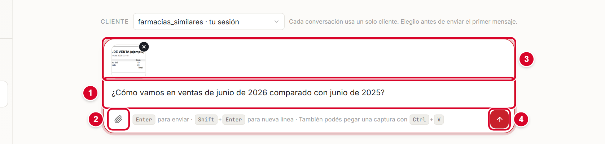
Ejemplos por área
| Área | Podés preguntar |
|---|---|
| Ventas | ¿Cuánto facturamos en marzo de 2026? ¿Cómo vamos en ventas de junio de 2026 comparado con junio de 2025? Mostrame las ventas por mes de enero a marzo de 2026. |
| Inventario | ¿Cuántas unidades hay del producto X? ¿Qué productos tienen menos de 10 unidades en stock? ¿Cuál es el valor total del inventario actual? |
| Cartera | ¿Cuánto es la cartera vencida total? Mostrame la edad de cartera de clientes. ¿Qué pagos se recibieron esta semana? |
| Compras | ¿Cuánto compramos en marzo de 2026? ¿Qué órdenes de compra están pendientes? |
| Contabilidad | ¿Cuál fue el estado de resultados del mes pasado? Mostrame el balance general del último trimestre. |
| Glosario | ¿Qué es la UVT? ¿Qué significa CUFE? |
| Cómo se hace en el ERP | ¿Cómo se anula una factura de venta en el ERP? ¿Dónde registro una devolución de un cliente? |
| Documentos de la empresa | ¿Qué dice la política de descuentos sobre el tope sin autorización? |
5. Entender la respuesta
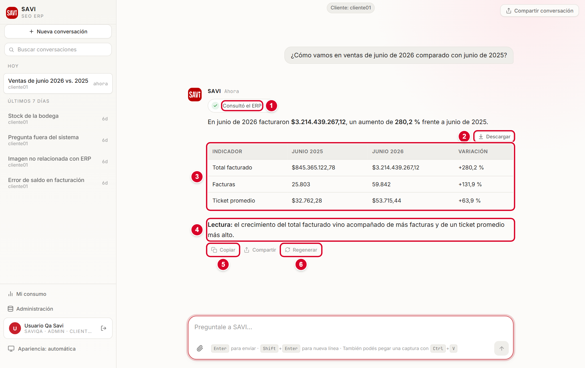
- 1Qué consultó. Una etiqueta te dice de dónde salió la información: Consultó el ERP, Consultó los documentos o Consultó el conocimiento del ERP. Un "×2" indica que hizo más de una consulta.
- 2Descargar. Baja la tabla a tu equipo (sección 6).
- 3La tabla. Los números ordenados en filas y columnas.
- 4Lectura. Un resumen corto que explica qué significan los números: qué creció, qué bajó, qué llama la atención.
- 5Copiar. Copia la respuesta para pegarla en otro lado.
- 6Regenerar. Pide una respuesta nueva a la misma pregunta.
Debajo de la respuesta también está el botón Compartir, que sirve para copiarla o enviarla (sección 9). No lo confundas con la flecha del cuadro de mensaje: esa envía tu pregunta.
Fuentes: de dónde sale cada dato
Cuando SAVI responde con información de un documento o de un sitio web de tu empresa, al final aparece el bloque Fuentes. Ahí ves el nombre del documento y las páginas usadas. Tocá la fuente para abrir el documento, o la página web, y comprobar el dato por tu cuenta.

Gráficos
Cuando conviene, SAVI muestra la información como un gráfico de barras, de líneas o de torta, además de la tabla. Si querés uno, pedilo con claridad: "Mostrame en un gráfico de barras…". No siempre es posible; si los datos no se prestan, SAVI te responde con la tabla.
Leé siempre la respuesta con ojo crítico. Si un número te sorprende, mirá la etiqueta de qué consultó SAVI, repetí la pregunta con más detalle o verificalo en el ERP.
6. Descargar una tabla en Excel o CSV
- En la respuesta, tocá el botón Descargar que está arriba de la tabla.
- Elegí el formato: Excel (.xlsx) 1 para abrirlo en Excel, o CSV (para otros programas) 2.
- El archivo se guarda en la carpeta de descargas de tu navegador.
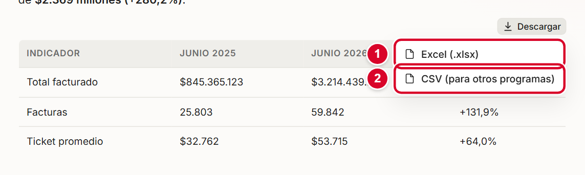
Si vas a trabajar los datos en Excel, elegí Excel (.xlsx): los números y los acentos se ven bien sin ningún paso extra.
7. Adjuntar imágenes
Podés mostrarle a SAVI una imagen para que la lea y te ayude. Es útil para una pantalla del ERP que no entendés o para una factura.
Tres formas de adjuntar
- Tocá el clip 2 del cuadro de mensaje y elegí la imagen en tu equipo.
- Arrastrá la imagen desde una carpeta y soltala sobre el cuadro de mensaje (aparece el aviso "Soltá las imágenes acá").
- Copiá una captura de pantalla y, con el cursor en el cuadro de mensaje, apretá Ctrl + V.
La imagen aparece en miniatura 3 sobre el texto. Si te equivocaste, tocá la x de la miniatura para quitarla. Después escribí tu pregunta y enviala.
Qué conviene adjuntar y qué no
| Sí | No |
|---|---|
| Capturas de pantallas del ERP, por ejemplo un mensaje de error. | Fotos o imágenes que no tengan que ver con el trabajo. SAVI no las analiza. |
| Facturas o documentos comerciales que querés revisar. | Imágenes de documentos de identidad, tarjetas o datos personales. |
| Imágenes nítidas y completas. | Imágenes borrosas o cortadas. |
Límites: hasta 4 imágenes por mensaje, de hasta 5 MB cada una, en formato PNG, JPG, WEBP o GIF.
- “nombre” no es una imagen compatible. Usá PNG, JPG, WEBP o GIF. Guardá la imagen en uno de esos formatos.
- “nombre” pesa más de 5 MB. Achicá la imagen o recortala.
- Podés adjuntar hasta 4 imágenes por mensaje. Enviá el resto en otro mensaje.
8. Preguntas de seguimiento, editar y regenerar
Seguir la conversación
SAVI recuerda lo que hablaron en la misma conversación. Por eso podés preguntar "¿Y en abril?" o "¿Podés mostrarlo por producto?" sin repetir todo. Cada conversación está atada a un cliente; si querés consultar a otro, empezá una conversación nueva.
Editar tu último mensaje
Si te equivocaste al escribir, o querés cambiar el período, podés corregir el último mensaje.
- Pasá el mouse por tu mensaje y tocá Editar 2.
- Cambiá el texto y tocá Enviar. Para dejarlo como estaba, tocá Cancelar o apretá Esc.
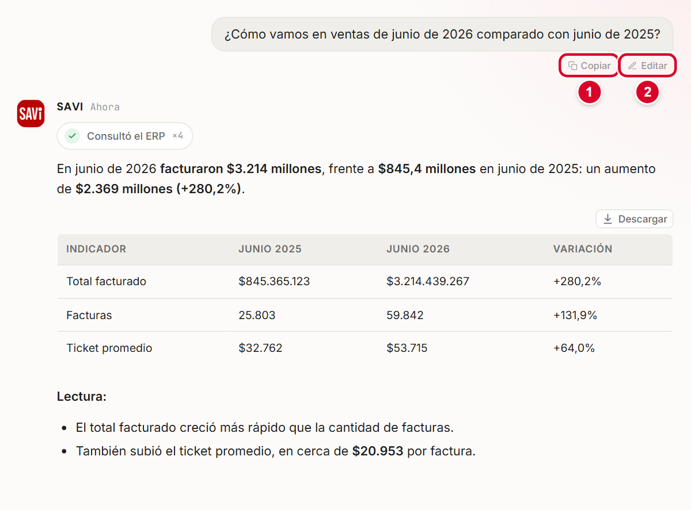
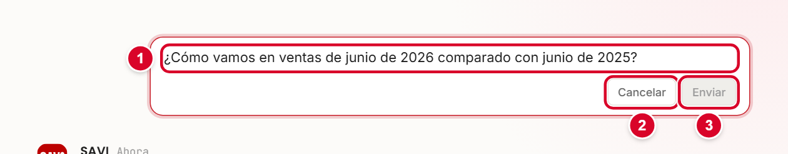
Regenerar una respuesta
Si una respuesta no te convence, tocá Regenerar debajo de ella. SAVI vuelve a consultar y arma una respuesta nueva.
Al editar o regenerar, la versión anterior no se pierde. Aparecen flechas para ir a la versión anterior o a la siguiente, y un botón ← actual para volver a la última.
9. Copiar y compartir
- Copiar: el botón Copiar debajo de cualquier mensaje lo copia al portapapeles.
- Compartir: el botón Compartir debajo de una respuesta abre un menú para copiar o enviar esa respuesta.
- Compartir conversación: el botón de arriba a la derecha abre el mismo menú para toda la conversación.
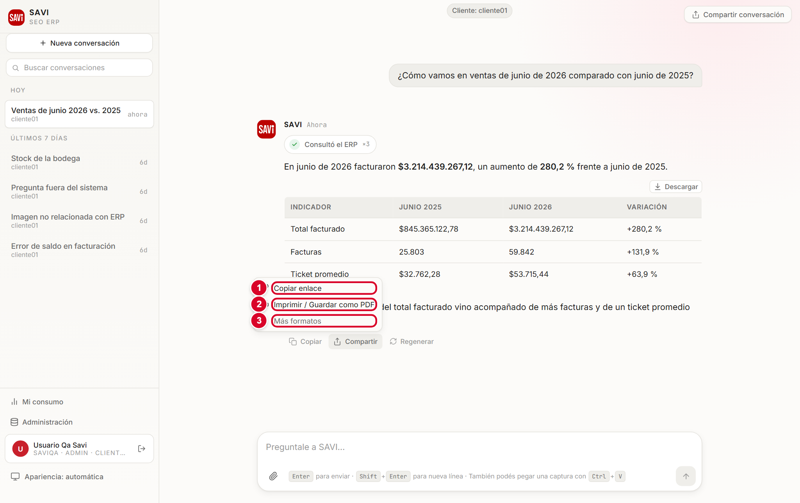
| Opción | Para qué sirve |
|---|---|
| Copiar enlace | Copia un enlace a la conversación. Funciona para vos (con tu usuario): no sirve para mostrársela a otra persona que no tenga acceso. |
| Imprimir / Guardar como PDF | Abre la vista de impresión de tu navegador. Elegí "Guardar como PDF" para tener un archivo que podés mandar por correo. |
| Más formatos | Despliega Página web (.html) y Texto con formato (.md). |
| Compartir… (Sistema) | Aparece solo en equipos que lo permiten. Usa las opciones de compartir del sistema. |
Para mostrarle un resultado a alguien que no usa SAVI, lo más simple es guardar la respuesta como PDF.
10. Tus conversaciones
Cada tema que hablás con SAVI queda guardado como una conversación en la lista de la izquierda. SAVI les pone un nombre automáticamente, según de qué se habló. Una conversación nueva en la que todavía no enviaste ningún mensaje no aparece en la lista hasta que la uses.
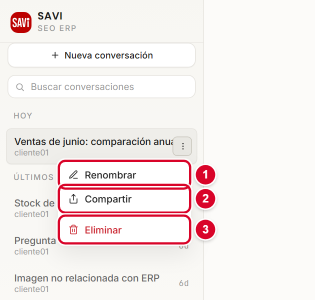
Renombrar
Tocá los tres puntos de la conversación y elegí Renombrar 1. Escribí el nombre y apretá Enter (Esc cancela). Una conversación que renombraste a mano conserva tu nombre: SAVI ya no se lo cambia.
Eliminar
Elegí Eliminar 3. SAVI te pide confirmar: “Se eliminará … Esta acción no se puede deshacer.” Confirmá solo si estás segura o seguro.
Buscar
Escribí una palabra en Buscar conversaciones. La lista se acorta a las que la contienen en el título, sin importar mayúsculas ni tildes. Para volver a ver todas, tocá Ver todas o borrá el texto.
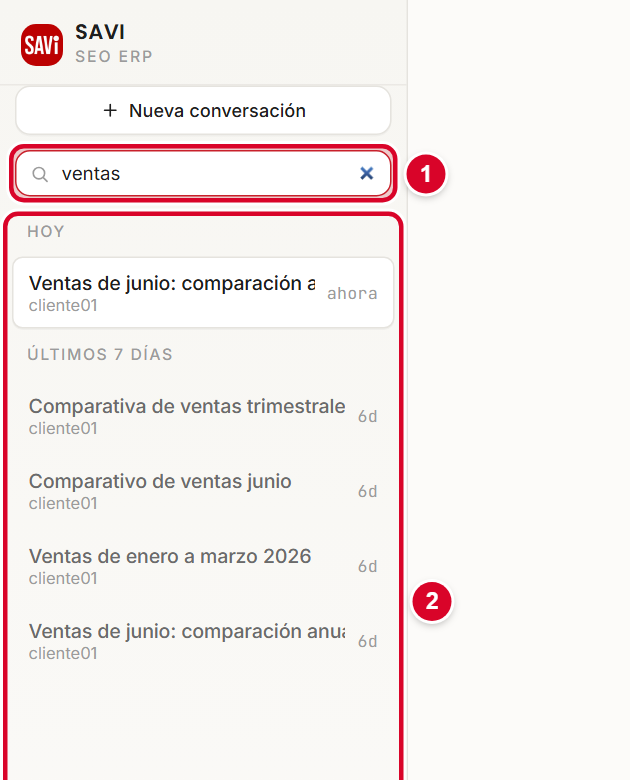
11. Cambiar de cliente o de base de datos
Cada cliente es una empresa con su propia información en el ERP. SAVI trabaja con un solo cliente por conversación, y lo ves arriba de la conversación como "Cliente: …".
- Tocá Nueva conversación.
- En el selector Cliente 1 elegí la empresa. Podés escribir parte del nombre para buscarla.
- Escribí tu pregunta. A partir de ahí, la conversación queda con ese cliente.
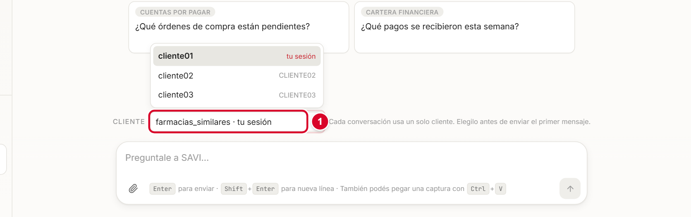
Elegí el cliente antes de enviar el primer mensaje. Una vez enviado, esa conversación no cambia de cliente. Solo ves los clientes a los que tu usuario tiene acceso.
12. Mi consumo y apariencia
Mi consumo
Tocá Mi consumo en el menú de la izquierda. Se abre tu perfil con la cantidad de consultas que hiciste. Con los botones Hoy, Ayer, 7 días, 30 días, 90 días o Personalizado elegís el período.
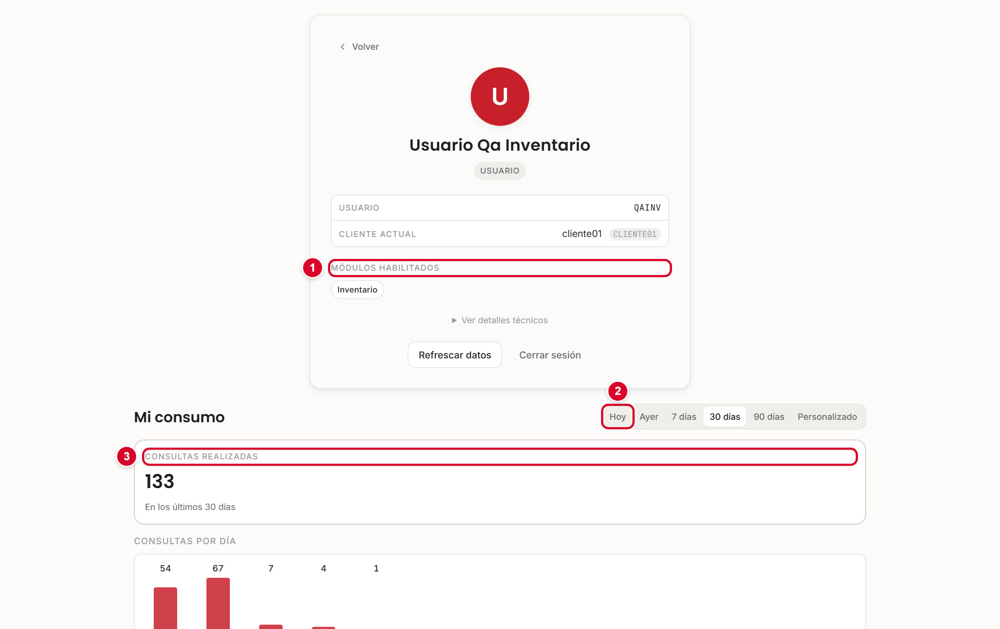
En el perfil también ves tu usuario, el cliente actual y los módulos habilitados: son los que SAVI te deja consultar.
Apariencia
El botón Apariencia (abajo a la izquierda) cambia el aspecto de SAVI cada vez que lo tocás: automática (sigue la configuración de tu equipo), clara u oscura. Se recuerda en ese equipo.
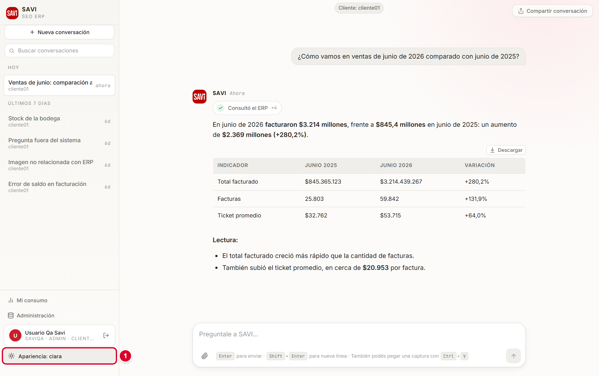
13. Si algo no sale como esperabas
| Lo que ves | Qué significa y qué hacer |
|---|---|
| El asistente no está disponible en este momento. Avisale a tu administrador. | SAVI no puede conectarse con el proveedor de inteligencia artificial (por ejemplo, falta saldo o la clave venció). Vos no podés resolverlo: avisá a tu administrador. |
| No pude completar la respuesta. Probá de nuevo en un momento. | Hubo un problema pasajero. Esperá un minuto y repetí la pregunta, o tocá Regenerar. |
| Sin acceso — Esta sección requiere acceso al módulo … | Tu usuario no tiene habilitado ese módulo del ERP. Pedíselo al administrador del ERP. |
| No encontré registros con ese nombre / No encontré datos para ese período. | SAVI buscó y no halló nada. Revisá el nombre, el código del producto o el período, o probá con otras palabras. |
| No pude generar una respuesta para esa consulta. | La consulta no se pudo responder. Reformulala con otras palabras y sin datos personales. |
| Una respuesta que no se parece a lo que esperabas | Agregá el período, el producto o el cliente a la pregunta. Si sigue igual, avisá a soporte con una captura. |
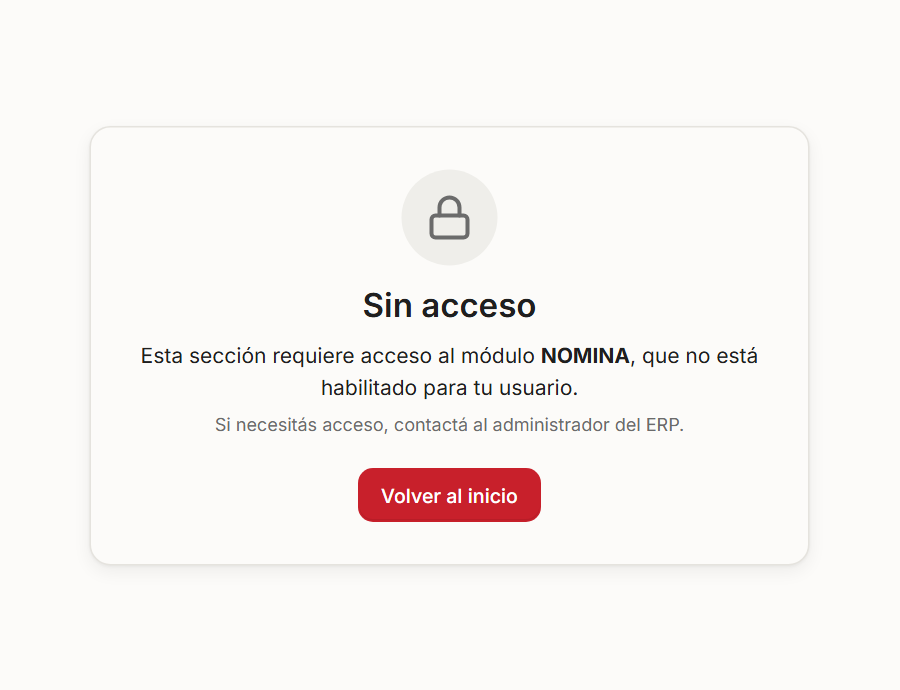
14. Consejos para preguntar mejor
- Decí el período. "Ventas de marzo de 2026" es mejor que "ventas".
- Nombrá el producto, cliente o concepto con el nombre o el código tal como está en el ERP.
- Una cosa por vez. Si necesitás varias, pedilas en mensajes separados: es más fácil de leer.
- Pedí comparaciones cuando quieras contexto: "comparado con el mismo mes del año pasado".
- Usá el seguimiento. Empezá con algo general y afinalo: "¿Y por producto?".
- Si no sabés cómo preguntar, escribí "¿Qué módulos del ERP puedo consultar?" o "Explicame qué cosas podés hacer".
| Mejor así | Menos útil |
|---|---|
| ¿Cuánto facturamos en marzo de 2026? | ¿Cuánto vendimos? |
| ¿Cuántas unidades hay del tornillo MAD 6 * 2? | ¿Hay tornillos? |
| Mostrame las ventas por mes de enero a marzo de 2026. | Dame las ventas. |
15. Tabla rápida de preguntas de ejemplo
| Quiero saber… | Pregunta |
|---|---|
| Cuánto facturé | ¿Cuánto facturamos en marzo de 2026? |
| Cómo voy contra el año pasado | ¿Cómo vamos en ventas de junio de 2026 comparado con junio de 2025? |
| Ventas mes a mes | Mostrame las ventas por mes de enero a marzo de 2026. |
| Existencias de un producto | ¿Cuántas unidades hay del tornillo MAD 6 * 2? |
| Faltantes | ¿Qué productos tienen menos de 10 unidades en stock? |
| Valor del inventario | ¿Cuál es el valor total del inventario actual? |
| Cartera vencida | ¿Cuánto es la cartera vencida total? |
| Antigüedad de la cartera | Mostrame la edad de cartera de clientes. |
| Compras | ¿Cuánto compramos en marzo de 2026? |
| Contabilidad | ¿Cuál fue el estado de resultados del mes pasado? |
| Un término | ¿Qué es la UVT? |
| Un procedimiento del ERP | ¿Cómo se anula una factura de venta en el ERP? |
| Una política de la empresa | ¿Qué dice la política de devolución de mercancía sobre el plazo? |
| Qué puedo consultar | ¿Qué módulos del ERP puedo consultar? |
16. Preguntas frecuentes
¿SAVI puede cambiar algo en el ERP?
No. SAVI solo lee la información. No crea, modifica ni elimina registros.
¿Por qué no me muestra el teléfono o el correo de un cliente?
SAVI no muestra datos personales (teléfonos, documentos de identidad, correos) para proteger a las personas.
¿Por qué no me contesta una pregunta sobre otro tema?
SAVI solo responde sobre el ERP, los datos y los documentos de tu empresa. Está pensado así a propósito.
Mi compañero ve datos que yo no veo. ¿Por qué?
Cada usuario tiene sus propios módulos habilitados en el ERP. SAVI respeta esos permisos. Si necesitás un módulo, pedíselo al administrador del ERP.
¿Se guardan mis conversaciones?
Sí, quedan en tu lista hasta que las elimines. Otras personas no ven tus conversaciones.
La respuesta tarda mucho. ¿Qué hago?
Las consultas grandes pueden demorar. Si pasan más de un par de minutos, tocá Detener y probá con una pregunta más acotada (un mes en lugar de un año).
¿Puedo usar SAVI desde el celular?
La pantalla se adapta a pantallas chicas, con un menú que se abre desde el botón de arriba. Pedile a tu administrador la dirección de acceso desde tu red.